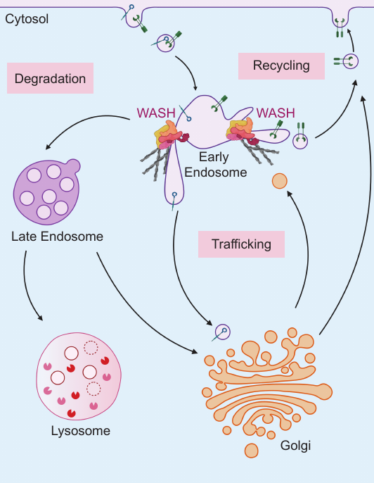

Tyler W. A. Bradshaw
Neurobiology PhDDuke University
Objectives
- Courtland and Bradshaw, eLife 2021: Genetic disruption of WASHC4 drives endo-lysosomal dysfunction and cognitive-movement impairments
- Resolving cellular space:
- Spatial Proteomics (subcellular fractionation)
- Proximity Proteomics (proximity labeling)
Cells are compartmentalized

EM images: SynapseWeb
Proteomics: Identifying and Quantifying proteins in Complex Biological Preparations

Basic Protein MS Analytical Workflow
Resolving Subcellular Space with Proximity and Spatial Proteomics
Spatial Proteomics: Resolving Subcellular Space by Subcellular Fractionation
ePSD Network: soderling-lab/Ueuzu2016
Proximity Proteomics: Resolving Subcellular Space by Proximity Labeling

An Intellectual Disability Associated Mutation in WASHC4

WASHC4 is a Subunit of the Pentameric WASH Complex

An Intracellular Trafficking Hub
The WASH complex acts upstream of Arp2/3 actin polymerization to direct early endosome maturation.
A WASHC4P1019R Mutant Mouse

WASH in vivo BioID
WASH Proximity Proteome

Identification of the in vivo WASH proximity proteome supports its role in endosomal trafficking.
SWIP Spatial Proteomics

Endosome
WASHC4 Mutant Neurons Exhibit Altered Endosome Structures

Lysosome
Lysosome Module
Synapse Module
Synapse and marker of neurodegeneration
Conclusions

Future Directions

Acknowledgments
- Dr. Jamie Courtland, MD, PhD
- Dr. Scott Soderling, PhD
- Dr. Akiyoshi Uezu, MD, PhD
- Soderling Lab (SD, AP, JK, YG, EE, WB)
- Greg Waitt and Duke's Proteomics Core Facility
- Funding: (NIH F31 5F31NS113738-03)
Questions
email: twesleyb10@gmail.com
The Swip Spatial Proteome
Rogdi, Rav2, and the RAVE Complex
Rogdi crystal structure: Lee et al., 2017
Goodness-of-fit of the edgeR model for TMT Proteomics
Extending Linear Models with Mixed Effects
\[\begin{aligned} Y_{p} = X\beta_{p} + \epsilon_{p} \\ % lm Y_{p} = Z\alpha_{p} + X\beta_{p} + \epsilon_{p} \\ % lmer \epsilon_{p} \stackrel{iid}{\sim} N(0,\sigma^2) \\ % e = N(0,s2) \alpha_{p} \stackrel{iid}{\sim} N(0,\sigma_{Z}^2) \\ % a = N(0,s2) H_0: l^T * \beta = 0 \\ t = \frac{l^T \hat{\beta}}{\sqrt{l \sigma^2 \hat{V} l^T}} \\ % t-stat \end{aligned} \]Structure in Graphs at Multiple Resolutions

Konigsberg < Kaliningrad < Russia
Assessing Differential Protein Abundance with tidyProt
library(tidyProt)
data(swip, wash_bioid, package="SwipProteomics")
fx <- log2(Intensity) ~ 0 + Condition
fm <- lm(fx, data = subset(wash_bioid, Accession==swip)
LT <- getContrast(fm, "WASH","Control")
lmTestContrast(fm, LT)